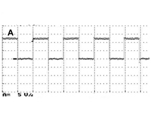

5540BN SPEED SIGNAL CHECK
- Path
- Test > 55 ELECTRICAL EQUIPMENT > 5540 EXTERIOR LIGHTING > 5540B HEADLAMPS > 5540BN SPEED SIGNAL CHECK
- Kind
- test / check procedure
- Applies to
- engines: 2.2 JTS, 3.2 JTS; all production periods; only with equipment: Gas discharge headlamps
- Interactive page
- https://sloeber94.github.io/elrnDB-aBrrSpdr/en/#/946001098
Applies to: engines: 2.2 JTS, 3.2 JTS; all production periods; only with equipment: Gas discharge headlamps
CHECK TO BE PERFORMED | RESOLUTION IF THE CHECK IS NOT OK | |
|---|---|---|
1 | Turn on the diagnostic tester and go to Instruments. In Voltmeter mode, select a full scale deflection value of 20 V and a time base of 2 s. Connect the voltmeter red probe to Pin 10 of the master headlamp 14-way connector and the red probe to earth. Turn one wheel by hand and when the speed is 4-6 km/h press the START button. Check that the signal acquired looks the attached graph without any gaps. The test is complete | Move on to Step 2 |

Speed signal
CHECK TO BE PERFORMED | RESOLUTION IF THE CHECK IS NOT OK | |
|---|---|---|
2 | Check for wiring continuity between Pin 28 of Body Computer connector B , and Pin 10 of the Master headlamp 14-way connector | The test can be considered over |
3 | Check for wheel speed signal errors in the ABS control unit | Continue as instructed by the diagnostic equipment |
4 | Check for wiring continuity between the ABS control unit and the Body Computer | Replace Body Computer |
5 | Check that the fault is no longer present | Replace the Master headlamp |
Topics linked from this page (5)
- 5505A32 BODY COMPUTER - R.R
- 5540B81 LEFT GAS DISCHARGE LIGHT CLUSTER - R.R.
- E7022 VDC
- F010 LEFT HEADLAMP
- M001 BODY COMPUTER